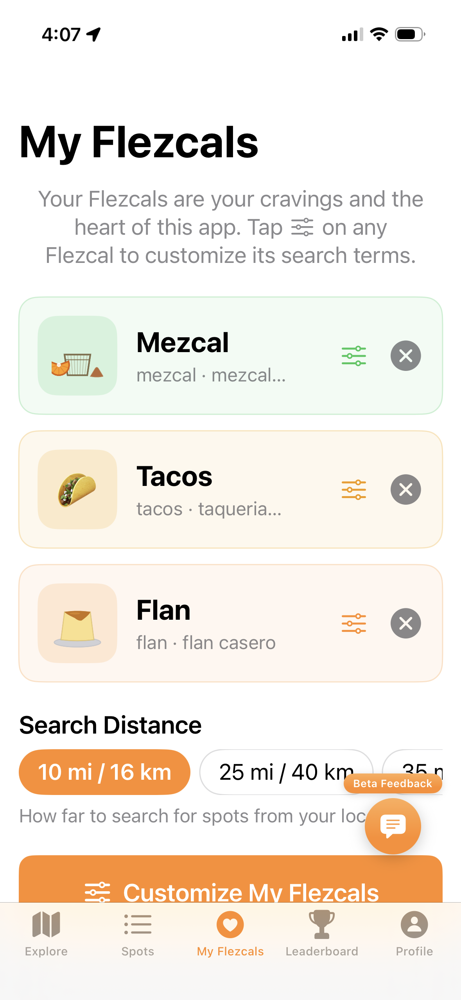
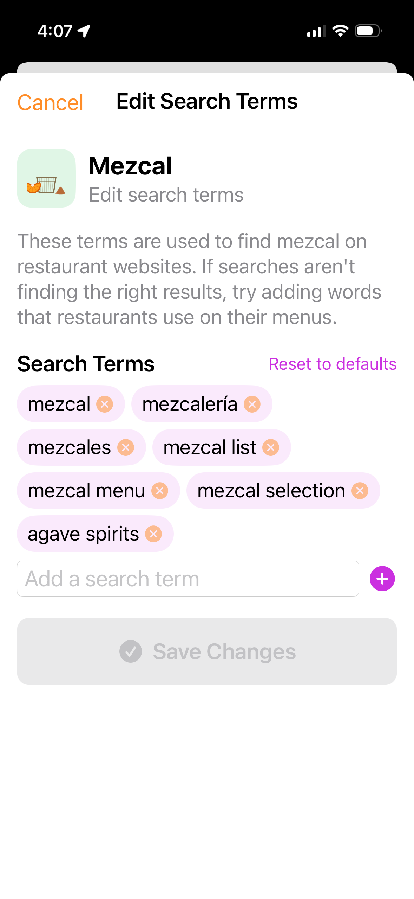
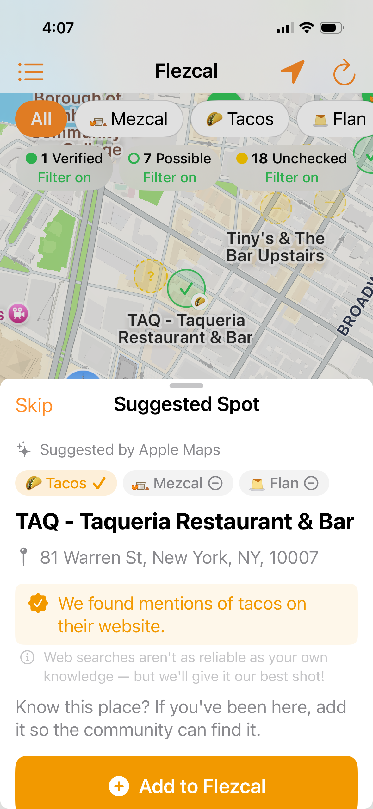

Flezcal User Guide
Everything you need to know about finding the food and drinks you crave.
What is Flezcal?
Flezcal is a community-powered guide for finding specific foods and drinks you're passionate about. The name combines "flan" and "mezcal" — two of the original categories — but the concept extends far beyond those two items. A "Flezcal" is any specific food or drink you love and want to track down wherever you go.
The app helps you answer one question: "Does this place have what I'm looking for?"
Rather than reviewing entire restaurants, Flezcal focuses on individual items. You might want to know which bars near you carry mezcal, which bakeries make flan, or which restaurants serve wood-fired pizza. Flezcal finds those places, checks their websites automatically, and lets the community verify and rate them (Figure 3).
Web Checks vs. Community Verification
Web checks are automated scans that happen when the app searches your area. The app visits venue websites and searches for keywords related to your picks. This is a best-effort scan — it works well when restaurants list their menu items online, but it can miss items that aren't on the website.
Community verification is powered by real people. When a user has physically been to a spot and confirms it serves a particular item, that carries more weight than any automated scan. Users can vote thumbs-up or thumbs-down on each category at a spot, building a trust score over time.
First Launch
Here's what happens the first time you open Flezcal.
Age Verification
Because the app includes alcohol-related categories (mezcal, bourbon, scotch, etc.), you'll see an age verification screen first. Confirm you're 21+ to proceed. This only appears once.
Welcome Screen
A welcome screen introduces the app's key features. Tap "Let's go!" to enter the app. This screen may reappear when new features are added. You can also revisit it anytime from Profile > What's New.
Your Default Picks
Every new user starts with three default picks: Mezcal, Flan, and Handmade Tortillas. These are loaded automatically so you can start exploring the map right away. You can swap them out anytime from the My Flezcals tab.
Location Permission
The app will ask for location access so it can show venues near you. You can also search other cities manually without granting location access.
Tutorials
After the welcome screen, you'll see the Learn Flezcal tutorials page. Four guided tutorials walk you through the app:
- Setting Up Your Flezcals — Choose your picks, customize search terms, and create custom categories
- The Spots Tab — Browse, search, and filter verified spots and web search results
- The Map — Understand pin types, filters, toggles, and searching new areas
- Adding a Spot — Verify and add spots to the community database
Each tutorial uses screenshots and spotlights to highlight features on your actual screen. You can navigate forward and back through steps, exit anytime to return to the tutorials page, and access tutorials later from Profile > Tutorials.
Signing In
You can browse the map, view ghost pins, and explore venues without signing in. But the community features that make Flezcal valuable — adding spots, rating them, verifying categories, and logging offerings — all require an account.
Why Sign In?
Signing in unlocks everything that turns Flezcal from a map viewer into a community tool:
- Add spots to the database so others can find them
- Rate items you've tried on the flan scale
- Verify categories with a thumbs-up or thumbs-down vote
- Log offerings — brands, styles, and varieties at a spot
- Earn points and climb the leaderboard
- Send feedback during the beta
Without an account, none of these actions are available. If you try to add a spot or rate one without being signed in, the app will prompt you to sign in first and then continue right where you left off.
Sign-In Options
Flezcal offers two ways to create an account:
- Sign in with Apple — the fastest option. Uses your Apple ID with Face ID or Touch ID. You can choose to share or hide your email address.
- Continue with Email — create an account with your email address and a password. You'll also choose a display name during sign-up.
Where to Sign In
You can sign in from two places:
- The Profile tab — go there anytime to sign in proactively before you start exploring.
- Any community action — if you tap "Add spot," "Rate," or "Verify" while signed out, a compact sign-in sheet slides up automatically. After signing in, the app returns you to the action you were trying to take. No need to start over.
Setting Your Display Name
After your first sign-in, the app asks "What should we call you?" This display name is how you appear on the leaderboard, in your ratings, and in community contributions. You can change it anytime from the Profile tab.
Your Picks
Your picks are the heart of the app. They determine what shows up on your map, which ghost pins appear, and what the web checker searches for. You can have up to 3 active picks at a time (Figure 1).

Figure 1. The My Flezcals tab showing your active picks.
Managing Picks
Go to the My Flezcals tab (heart icon) to see your current picks. Each pick card shows the category emoji and name, the search terms used for website scanning, an edit button to customize terms, and a remove button.
Tap "Customize My Flezcals" to open the full category grid, where you can browse all available options and swap picks in and out.
Available Categories
Flezcal includes 50 curated categories across three groups:
- Food: Mezcal, Handmade Tortillas, Tacos, Birria, Pozole, Ceviche, Mole, Pupusas, Ramen, Sushi, Omakase, Dim Sum, Pho, Bibimbap, Korean BBQ, Dumplings, Poke, Tapas, Paella, Iberico Ham, Wood-Fired Pizza, Oysters, Lobster Rolls, Tartare, Caviar
- Drinks: Whiskey, Amaro, New England IPA, Craft Beer, Natural Wine, Sake, Craft Cocktails, Specialty Coffee, Boba, Tea, Matcha, Kombucha, Cider
- Sweets & Specialty: Flan, Artisan Chocolate, Khachapuri, Baklava, Churros, Gelato, Mochi, Empanadas, Crepes, Crème Brûlée, Croissants, Tres Leches
Creating a Custom Category
Can't find what you're looking for? Tap "Create Your Own" at the bottom of the category grid. You'll choose a name, an emoji, and the search terms the app should use. Be specific: "Pupusas" or "Empanadas" works great. Broad terms like "Italian" or "Seafood" are too generic for useful results.
Customizing Search Terms
Every category has search terms the app uses when scanning venue websites, and map search terms that control which venues appear as ghost pins. Tap the edit button (slider icon) on any pick card to open the customization page (Figure 2).

Figure 2. Customizing the search terms and map queries for a pick.
The customization page lets you adjust two sets of terms:
- Website Keywords: Words the web checker looks for on restaurant menus and websites. Adding alternate spellings, regional names, or terms in other languages improves scan accuracy.
- Map Search Terms: The queries sent to Apple Maps to discover venues. These control which restaurants, bars, and stores appear as ghost pins on the map.
Tap "Reset to defaults" at any time to restore the original terms for a built-in category.
The Map (Explore Tab)
The Explore tab is the main screen. It shows your location (blue dot), confirmed spots (solid colored pins with category emoji), and ghost pins (suggested spots that haven't been verified yet).
Filter Buttons
The filter bar at the top lets you show or hide different types of pins (Figure 3). Each button displays a count and shows Filter on (green) or Filter off (red) so you always know which pins are visible.

Figure 3. Green ghost pins indicate likely matches. Filter buttons at the top show which pin types are visible.
Searching for Spots
Flezcal uses a two-stage search to get you results quickly.
Stage 1: Quick Scan
When the map loads or you tap "Search This Area", the app immediately fetches nearby venues from Apple Maps and runs a quick homepage scan on the closest 25. Yellow ghost pins appear on the map. Venues whose websites mention your picks turn green. This usually takes just a few seconds.
Stage 2: Search Wider Area
After the quick scan finishes, a "Search Wider Area?" button appears at the bottom of the map (visible in Figure 3). Tap it to scan the remaining venues in the wider area. This may take a bit longer but can reveal matches that are farther away from the map center.
Search This Area
Pan or zoom the map and a "Search This Area" button appears. Tapping it starts a fresh two-stage search for the new area.
Ghost Pins
Ghost pins are unconfirmed suggestions from Apple Maps. They represent places that might have what you're looking for. Both types are visible in Figure 3.
Yellow ghost pins (dashed border, "?" icon) are untested suggestions. The app hasn't confirmed anything about their menu yet.
Green ghost pins (solid border, checkmark icon, gently pulsing) are likely matches. The app found keywords related to your picks on their website during the pre-screen. These are worth checking first.
Tapping a Ghost Pin
When you tap any ghost pin, a detail sheet slides up and the app runs a thorough 3-pass website check:
- Pass 1: Downloads the venue's homepage and menu subpages, scanning for your pick's keywords
- Pass 2: If Pass 1 didn't find a match, searches the web for your keywords on that venue's domain
- Pass 3: (Only for venues with no website) Searches the broader web for your pick at that venue name
While the primary pick is being checked, all your other active picks are scanned against the same cached pages at no extra cost.
The sheet shows category chips indicating what was found, a result banner, and actions to add the spot or dismiss the pin (Figure 4).

Figure 4. A ghost pin detail sheet showing website check results. Green chips confirm a match; gray chips were not found.
Adding a Spot
Adding a spot is the most valuable action you can take in Flezcal. It creates a permanent listing that others in the community can find, verify, and rate. You'll need to be signed in to add a spot — if you're not, the app will prompt you.
From a Ghost Pin
Tap a ghost pin on the map, then tap "Yes, add it to Flezcal!" This pre-fills the venue info and any categories the web check confirmed.
From Explore Search
Go to the Spots tab, switch to Explore mode, and search for a venue by name. Tap any result to open the detail sheet, then add it.
The Confirm Spot Screen
After selecting a venue, you'll see a map preview, the venue name and address, and the categories to be added. If the spot already exists in Flezcal, your categories merge with the existing entry.
Each category has a specific type of offering you can list. For example, Mezcal asks for brands, Flan asks for styles, Oysters asks for varieties. Offerings are optional but helpful for the community.
Spot Details
Tap any confirmed spot (the solid colored pins on the map, or any row in the Spots tab) to see its full detail page.
What You'll See
The detail page shows:
- A photo or map preview at the top
- The spot name, address, and distance from you
- Category badges for each item confirmed at this venue
- The average community rating (displayed with flan emoji)
- Fun badges like "Hidden Gem" or "New"
Offerings
Each category lists the specific brands, styles, or varieties the community has logged at that venue. You can tap the + button to add more offerings if you've been there and know what they carry.
Actions
- Open in Maps: Get directions via Apple Maps
- Add a Flezcal: Add another category to this spot (if the venue has more of your picks)
- Rate: Give your personal rating
- Report Spot: Flag inaccurate or inappropriate listings
- Report as Permanently Closed: Let the community know if a place has shut down
Verifying a Spot
Verification is the backbone of Flezcal's community trust system. It's quick, it's easy, and it makes the data better for everyone. You'll need to be signed in to verify.
How It Works
On every spot detail page, under each category, you'll see a verification prompt asking the community to confirm whether this venue actually has that item. This is separate from rating — you don't need to score the quality. Just confirm whether it's there.
- Thumbs up — "Yes, they have this." You've been there and can confirm.
- Thumbs down — "No, they don't have this (anymore)." The item was missing or has been removed from the menu.
Why It Matters
A confirmation percentage shows the community consensus on each category at each spot. The more people who verify, the more trustworthy the listing becomes. This is especially important for items that web checks might get wrong — a website might still list an item that was removed from the menu months ago.
Verification earns you +1 point on the leaderboard for each category you verify.
Rating a Spot
Flezcal uses a flan-based rating scale instead of stars. You'll need to be signed in to rate.
| Rating | Label | Meaning |
|---|---|---|
| 1 flan | Confirmed Spot | They have it |
| 2 flans | Neighborhood Option | Satisfies the craving |
| 3 flans | Best Local Choice | Best of the nearby choices |
| 4 flans | Best in Region | Worthy of a road trip |
| 5 flans | World Class | Worthy of a pilgrimage |
How to Rate
Open the spot detail page, tap "Rate", select the category you're rating, choose your flan level, and confirm. The app will ask you to confirm higher ratings (4 and 5 flans) to make sure you really mean it — those levels carry weight.
You can edit or remove your rating anytime by revisiting the spot detail page.
The Spots Tab
The Spots tab is a unified page that combines community-verified spots with live search results. When you open the tab, the app automatically searches nearby venues based on your active Flezcal picks.
Category Filters and Toggles
Category filter pills at the top let you narrow results to a specific pick. Below that, three toggles — Verified, Likely, and Nearby — control which types of results appear. Each shows a count so you can focus on what matters most.
Searching Other Cities
Tap the location bar to search a different city. Type a name, pick from the suggestions, and the app scans that area for your Flezcals. Great for planning trips.
Search Wider Area
After the initial search finishes, a "Search Wider Area?" button appears at the bottom. Tapping it scans additional venues beyond the initial closest results, promoting new Likely matches into the list.
Tap any result to open the detail sheet with an automated website check. From there you can add it to Flezcal or tap "Show on Map" to see it on the map.
Leaderboard
The Leaderboard tab tracks community contributions. Every spot you add, every rating and verification you submit, and every offering you log earns you points.
Scoring
| Action | Points |
|---|---|
| Add a new spot | +10 |
| Rate a spot | +5 |
| Identify a category on a spot | +3 |
| Log an offering (brand, style, etc.) | +1 |
| Verify a spot | +1 |
Contributor Ranks
Ranks are based on where you fall relative to all contributors — the more you contribute compared to others, the higher your heat level on the pepper scale:
| Rank | Percentile |
|---|---|
| Ghost Pepper | Top 10% |
| Habanero | Top 10–30% |
| Serrano | Top 30–50% |
| Jalapeño | Top 50–70% |
| Poblano | Top 70–90% |
| Bell Pepper | Bottom 10% |
When the community is still small, everyone is ranked as New until there are enough contributors for percentile ranking to kick in.
Brand Collector badge: Log 10+ brands or offerings to earn this special badge next to your name.
Profile
The Profile tab is your home base. What you see depends on whether you're signed in.
Signed Out
You'll see sign-in buttons (Apple and Email) and a link to What's New.
Signed In
The Profile tab shows your full contributor dashboard:
- Your display name and account info
- Your contributor rank, points, and progress toward the next rank
- A breakdown of your contributions — spots added, categories identified, ratings given, brands logged, and verifications
- Your top Flezcal categories (what you contribute to most)
- A verification and rating history with links back to each spot
From here you can also change your display name, view What's New, return to the Tutorials, access the privacy policy and terms, sign out, or delete your account.
Share Your Feedback
During beta testing, you may see a floating orange feedback button in the bottom-right corner of the screen (visible in Figure 3). Tap it to open the feedback form.
Submitting Feedback
- Tap the orange feedback button
- Choose a category: Bug, Suggestion, Content, Design, or Other
- Optionally enter the city you're exploring
- Write your feedback (at least 10 characters)
- Tap "Submit Feedback"
Your feedback is sent along with basic device info (app version, device model, iOS version) so we can investigate any issues. No personal data beyond your anonymous user ID is included.
For Venue Owners
If you own or manage a spot that's on Flezcal, you can update your listing just like any other user, for free. To go further, contact support@flezcal.app to become Owner Verified. Owner verification gives you:
- A verified badge on your listing
- The ability to lock your menu details so others can't modify them
- A section to list your featured brands
- A reservation link on your spot page
Tips and Tricks
- Sign in early. You can browse without an account, but signing in means you can add spots and verify categories the moment you discover something.
- Shake your phone for a surprise.
- Green ghost pins are your best bet. The app already found keyword matches on their website. Tap those first.
- Tap "Search Wider Area?" after a search to scan more venues beyond the closest 25. This often reveals matches that are farther from the center.
- Edit your search terms if you're not getting good results. Adding terms that restaurants actually use on their menus makes the web check more accurate.
- The web check scans menu subpages too, not just the homepage. It follows links to pages like "/menu" or "/food" to find your items.
- Your picks shape everything. Change your picks and the map, ghost pins, and filters all update to match.
- You can search other cities in the Explore tab. Great for trip planning.
- Check the filter buttons. If pins seem to be missing, make sure the filters show "Filter on" (green).
- Rate only what you've tried in person. The rating scale is about the specific item at that specific place, not the restaurant overall.
- Verify even if you don't rate. A quick thumbs-up or thumbs-down helps the community even if you don't have a rating to give.